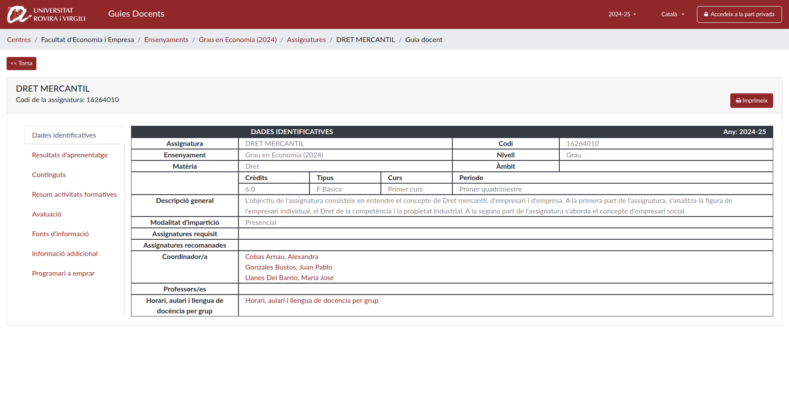
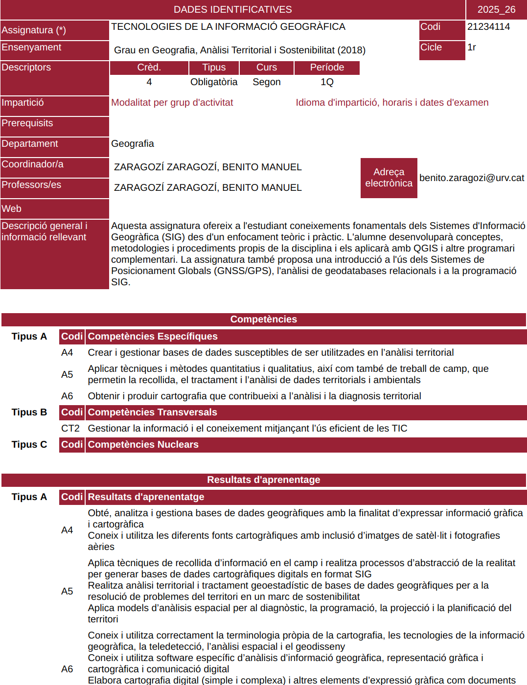

Amb l'objectiu d'avaluar la presència dels ODS als ensenyaments de la Universitat Rovira i Virgili, s'ha emprat la metodologia següent: en primer lloc, tècniques de web scraping i mineria de textos per extreure els continguts de les guies docents; després, traducció a l'anglès per facilitar l'anàlisi; finalment, anàlisi de dades en R per identificar termes relacionats amb els ODS i estimar-ne la presència als ensenyaments de la URV.
Per obtenir el contingut dels ensenyaments, s'extreuen dades de les guies docents de les assignatures corresponents mitjançant múltiples processos de web scraping (Firefox WebScraper Plugin).
Un exemple d'enllaç d'ensenyament és: https://guiadocent.urv.cat/guido/public/centres/503/ensenyaments/3475/detall.
En aquest cas, "503" identifica el centre (Facultat de Turisme i Geografia) i "3475" l'ensenyament (Grau en Geografia, Anàlisi Territorial i Sostenibilitat).
{% endcapture %} {% capture methods_step_2 %}La informació es recupera en dos estàndards: DOCnet i GUIDO. DOCnet és encara present en moltes guies, mentre que GUIDO s'està desplegant progressivament.
Per a DOCnet cal obtenir l'enllaç de l’iframe; per exemple: Enllaç DOCnet.
Per a GUIDO, l'accés és per apartats; per exemple: Enllaç GUIDO.
S'extreuen descripció, contingut, resultats d'aprenentatge, competències i referències, i s'organitzen en un dataframe amb el context de curs, ensenyament i centre.
{% endcapture %} {% capture methods_step_3 %}L'anàlisi per identificar i quantificar ODS es basa en detecció de termes i mètodes del paquet text2SDG en R. El contingut original en català es tradueix a l'anglès (LibreTranslate, i de suport Apertium).
Es van revisar diverses fonts de paraules clau i mètodes:
Finalment, text2SDG es va escollir per utilitat i eficiència en grans volums de text.
{% endcapture %} {% capture methods_step_4 %}Els ODS detectats es fusionen amb les metadades de les assignatures i s'exporten en un format JSON estructurat per centres, ensenyaments i cursos.
Aquest format permet consultes ràpides i iteratives per analitzar quins centres, programes i assignatures mostren major alineació amb els ODS.
{% endcapture %}La variabilitat entre DOCnet i GUIDO complica l'extracció uniforme. Les diferències de format i d'accés a continguts (especialment l’iframe de DOCnet) han obligat a mantenir fluxos de processament diferenciats.


També s'han detectat dades incompletes o mal formatejades (referències, competències i resultats), que en alguns casos requereixen revisió manual per garantir qualitat.
En alguns ensenyaments també hi ha continguts ubicats en seccions no previstes de la guia docent, cosa que pot reduir coherència en la detecció ODS.
El treball futur es pot articular en dues línies complementàries. D'una banda, cal continuar amb millores tècniques del pipeline: reforçar l'extracció amb eines natives d'R (rvest, httr) per millorar traçabilitat i control d'errors, incorporar preprocés contextual abans de la traducció per reduir ambigüitats en termes tècnics i compostos, i consolidar visualitzacions que permetin comparar de manera més directa cobertures i diferències entre sistemes i seccions.
De l'altra, hi ha una feina conceptual i metodològica igualment rellevant. Una revisió manual de mostres de resultats hauria de servir per estimar falsos positius i falsos negatius, i per orientar millor la selecció dels criteris d'anàlisi. En lloc d'assumir un únic sistema òptim per a tots els casos, convé estudiar quina combinació de sistema i secció és més robusta per a cada ODS, amb criteris explícits de qualitat i interpretabilitat.
A partir d'aquesta validació, es podria elaborar un conjunt de recomanacions pràctiques per a la redacció de guies docents, orientades a fer més clara i consistent la descripció de competències, continguts i referències vinculables als ODS. En paral·lel, seria pertinent construir un diccionari propi de termes ODS adaptat al context URV i utilitzar-lo per entrenar o ajustar un model/sistema de classificació específic, més alineat amb el llenguatge real de les titulacions analitzades.